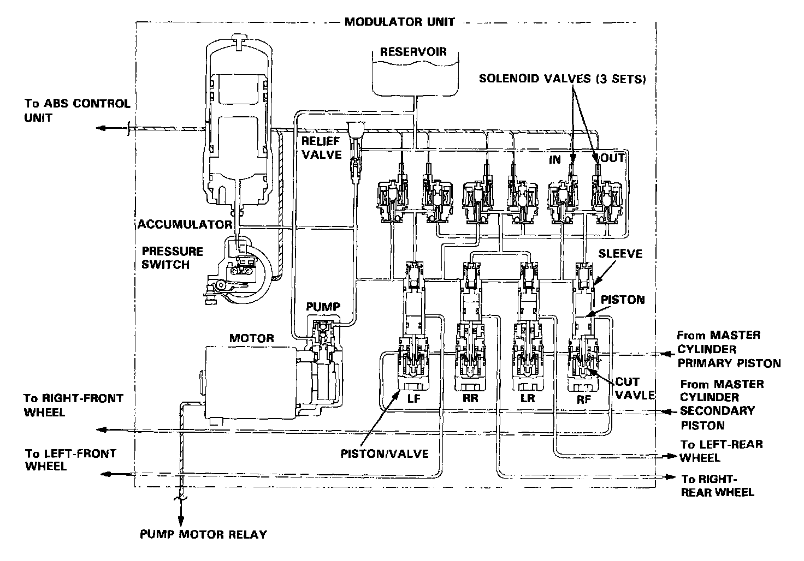

Modulator Unit

Piston/valve
The piston/valve assembly consists of the piston, cut valve, and sleeve. There are four piston/valve assemblies in the modulator unit to control the brake fluid pressure to each caliper. The piston/valve assemblies for the rear brakes also serve as proportioning control valves to prevent the rear wheels from locking if the ABS malfunctions or when the ABS is not activated.
Solenoid valves
The modulator unit opens and closes the inlet and outlet solenoid valves, and shifts the ABS high-pressure passage according to the signals from the ABS control unit. There are three solenoid valve assemblies, each containing an inlet and outlet valve, in the modulator unit; one for each front wheel, and one for both rear wheels. The inlet valves are normally open (open when the coil is not energized), while the outlet valves are normally closed.